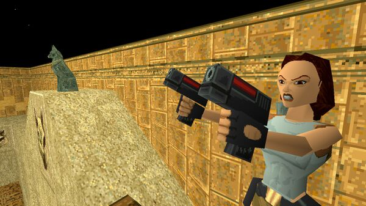

Impact on Gaming Culture
The success of Tomb Raider helped solidify the PlayStation as a dominant force in the gaming industry. Lara Croft’s popularity skyrocketed, with her character becoming a pop culture icon—featured in magazines, on merchandise, and even on the big screen. She became one of the most recognized video game characters of all time, paving the way for future female protagonists in gaming.
The Evolution of the Series
While Tomb Raider on PS1 was the first step in Lara Croft’s journey, it laid the foundation for a long-running and evolving franchise. The success of the original game led to numerous sequels, including Tomb Raider: The Last Revelation and Tomb Raider: Chronicles. These titles expanded on the gameplay mechanics and storyline, but it was the 2013 reboot of the series that brought Lara Croft to a new generation of gamers with a more modern take on the character. The game’s legacy endures, with Tomb Raider inspiring countless other games in the action-adventure genre. Its innovative gameplay mechanics and strong protagonist paved the way for future adventures and set a high bar for the industry.
Legacy and Influence
Tomb Raider’s influence goes beyond its technical achievements. It revolutionized 3D platforming and exploration and set a new standard for action-adventure games. It inspired games such as Uncharted, Assassin’s Creed, and Prince of Persia, all of which incorporated elements from Tomb Raider’s design. The 1996 release of Tomb Raider remains a touchstone for game developers and fans alike. Even decades later, the impact of Lara Croft's first adventure is still felt in gaming.
- Resource Management: Throughout Tomb Raider, players needed to manage limited resources, including ammunition and health packs. The scarcity of supplies added an extra layer of strategy, forcing players to decide when to fight and when to avoid danger.
- Swimming and Underwater Exploration: A unique aspect of the game was the ability to dive underwater. Players had to navigate submerged areas, which introduced a sense of danger with limited air supply and hidden underwater traps, adding to the game's challenge.
- Varied Environments: The game featured diverse environments, from lush jungles and icy mountains to ancient tombs and temples. Each area had its own challenges and aesthetic, keeping the gameplay fresh and exciting.
- Enemy Variety and Boss Battles: Tomb Raider offered a variety of enemies, from wild animals and mercenaries to mythological creatures. The game also featured intense boss battles that tested players' skills and required creative strategies to defeat.